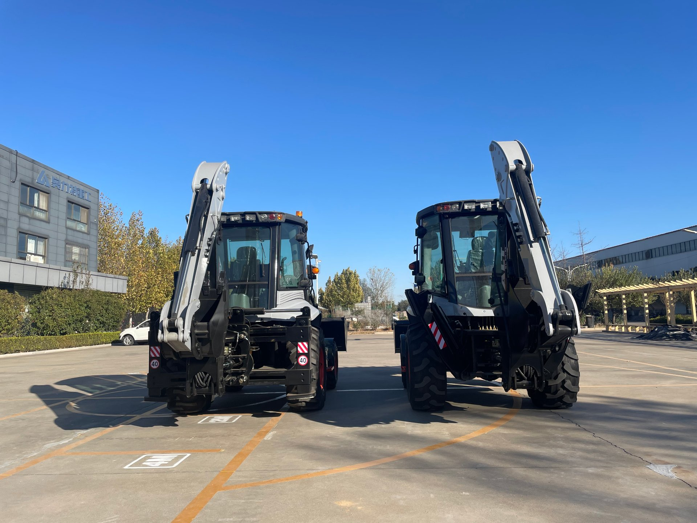
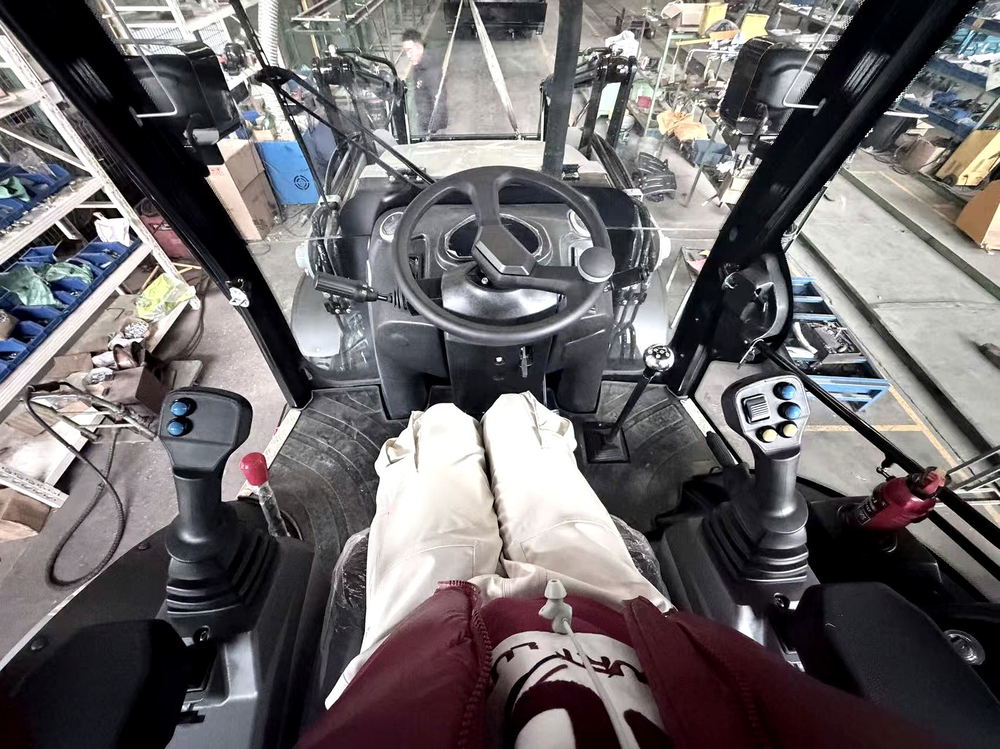
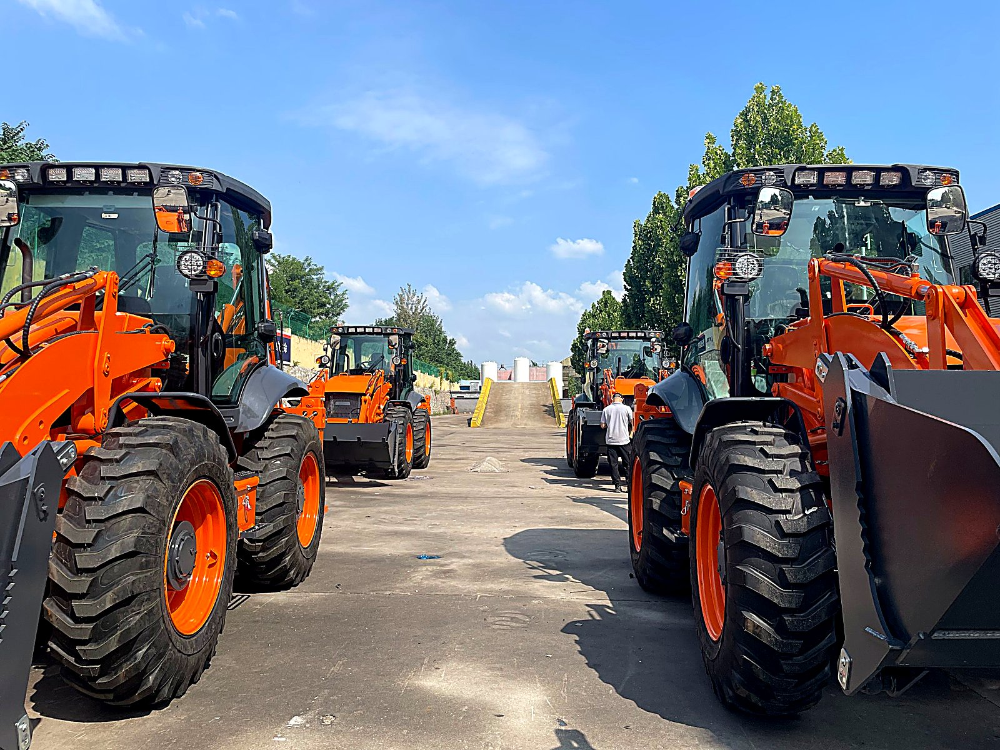

Every buyer asks me the same question, and it is the right question to ask: how long will this machine last? The problem is that most of the answers floating around the internet are either sales talk ("it will last forever with proper maintenance") or horror stories from someone who bought a machine that was already half-dead and did not know it.
I am not going to do either of those. I have spent years on the factory floor watching machines get built, tested, shipped, and then hearing back from clients in Africa, the Middle East, Southeast Asia and South America about how those machines are holding up after one year, three years, five years. This article is the honest version — real hour numbers, real rebuild intervals, and the real signs that tell you a machine is reaching the end of its useful life.
If you are spending $30,000 to $60,000 on a machine, you need to know whether you are buying five years of service or fifteen. Let me walk you through it the way I think about it on the factory floor.

In This Guide
- The Short Answer First
- What Determines a Backhoe Loader's Lifespan
- Operating Hours: The Real Currency of Machine Life
- Engine Life: Hours to Expect and When to Rebuild
- Hydraulic System Lifespan: The System That Ages Fastest
- Transmission and Axle Life
- Structural Life: When Does the Steel Get Tired
- The Maintenance Multiplier: Why Two Identical Machines Live Different Lives
- New vs Used: Buying a Machine That Still Has Life Left
- Rebuild vs Replace: The Math at 6,000 Hours
- How I Track Machine Life on the Factory Floor
- Signs Your Backhoe Loader Is Reaching End of Life
- Frequently Asked Questions
The Short Answer First
If you want the number and nothing else, here it is: a well-maintained backhoe loader typically lasts 5,000 to 8,000 operating hours before it needs a major rebuild. With excellent maintenance and moderate use, many machines reach 10,000 to 12,000 hours. The structural frame and body can remain sound for 15 to 20 years even after the engine and hydraulic pump have been rebuilt once or twice.
In calendar years, that translates to roughly 10 to 15 years of active service for a machine used at a moderate pace. A machine doing light duty (under 1,000 hours a year) might still be running fine at 15 years old. A machine in heavy continuous duty (2,500+ hours a year) may need its first rebuild before it is three years old.
But those numbers are averages, and averages hide the truth. The real answer depends on five things: how the machine was built, how it is used, how it is maintained, what environment it works in, and whether anyone fixed small problems before they became big ones. Let me break each of those down.
What Determines a Backhoe Loader's Lifespan
Two machines can leave the same factory on the same day, built to the same spec, and end up in completely different condition five years later. I have seen it happen. Here is what makes the difference:
1. Build Quality and Component Spec
This is the foundation, and it is set before the machine ever leaves the factory. The thickness of the steel in the frame, the grade of the hydraulic pump, the quality of the welds at high-stress points, the spec of the engine — these things decide the ceiling of the machine's life. A machine built with a proper piston pump and wet-disc brakes has a higher lifespan ceiling than one built with a cheap gear pump and dry brakes, even if both look identical from the outside. If you want to understand one of the most important build-quality decisions, read my article on wet drive axles — it explains why oil-bathed brakes can double the usable life of your drivetrain in dusty conditions.
2. Duty Cycle — How Hard You Work It
A backhoe loader digging compacted clay for eight hours a day, six days a week, is living a very different life from one that does two hours of trenching and then sits idling while the operator waits for a truck. Duty cycle is not just about total hours — it is about what those hours contain. Heavy continuous loading, hard digging, rock work, and constant direction changes all accumulate wear faster than light material handling.
3. Maintenance Discipline
This is the single biggest variable, and it is entirely in your control. I will dedicate a whole section to it, but the short version is: a machine that gets oil and filter changes on time, every time, will outlast an identical machine that gets them "when someone remembers" by 40 percent or more in operating hours. I have seen it on my own clients' machines.
4. Operating Environment
Dust, heat, humidity, and salt air all attack different systems. Dust kills air filters, hydraulic seals, and dry brake surfaces. Heat degrades hydraulic oil and stresses cooling systems. Salt air corrodes electrical connections and exposed steel. A machine in the Sahara has a different wear profile than one in a humid coastal city, and your maintenance plan needs to account for that.
5. The Skill of the Operator
This one is underestimated. An operator who feathers the hydraulics, lets the machine warm up before loading it, and does not slam the loader arms down or jerk the backhoe will make every component last longer. An operator who treats the machine like a hammer will shorten the life of pins, bushings, cylinders, and the frame itself. I have seen two machines on the same job site, same hours, same maintenance schedule, in visibly different condition — and the only variable was who was sitting in the seat.
Operating Hours: The Real Currency of Machine Life
If there is one thing I want buyers to understand, it is this: calendar age is nearly meaningless for a backhoe loader. Operating hours are the real measure of life. A five-year-old machine with 2,000 hours on it has more life left than a two-year-old machine with 5,000 hours.
Here is a rough guide to what hour ranges mean:
| Hour Range | Condition Label | What It Means |
|---|---|---|
| 0 – 1,500 | Like new | Break-in period complete, machine is in its prime |
| 1,500 – 3,000 | Low hours | Prime working life, wear parts starting to need first replacement |
| 3,000 – 5,000 | Moderate | Hydraulic hoses and pins due for attention, engine still strong |
| 5,000 – 7,000 | High hours | Engine rebuild approaching or due, hydraulic pump may need service |
| 7,000 – 10,000 | Very high | Should have had at least one engine rebuild; multiple systems serviced |
| 10,000+ | Extended life | Living on rebuilds; structure is the question, not the powertrain |
One important catch: the hour meter on most backhoe loaders tracks engine running time, not actual working time. This means idle time counts. A machine that sits running while the operator takes a break, waits for a truck, or talks to a supervisor is still racking up hours. This is why two machines with the same hour reading can be in very different condition — one may have done far more actual digging and loading than the other.
My tip: When you are evaluating a used machine, ask not just "how many hours" but "what kind of hours." A machine that did 4,000 hours of light municipal work is a very different proposition from one that did 4,000 hours of continuous quarry loading.
Engine Life: Hours to Expect and When to Rebuild
The diesel engine is the component most buyers worry about, and it is also the one with the clearest rebuild interval. Here is what I tell my clients:
A well-maintained backhoe loader diesel engine — whether it is a 4-cylinder naturally aspirated unit on a compact machine like the BL 20-07 or a turbocharged four-cylinder on a heavy-duty model like the BL 90-25 — will typically run 4,000 to 6,000 hours before its first major rebuild. A machine that gets clean fuel, clean oil, and clean air will push toward the top of that range. A machine that does not will need it at the bottom, sometimes earlier.

Signs the Engine Is Approaching Rebuild
- Rising oil consumption — you are adding oil between changes more frequently than before
- Blow-by from the crankcase breather — pressure escaping past the piston rings, visible as gas pulsing from the oil fill cap
- Hard starting when warm — the engine fires cold but struggles after it has been run and shut down
- Loss of power under load — the machine feels sluggish in heavy digging or loading that it used to handle easily
- Exhaust smoke that does not clear — a puff at startup is normal; continuous blue or black smoke after warm-up means oil or fuel is going where it should not
- Metal in the oil filter — when you cut open the filter and find visible flakes, bearings or cylinder liners are wearing
If you see two or more of these together, it is time to plan a rebuild, not panic. An engine rebuild on a backhoe loader typically means new piston rings, bearing shells, valve seats, and gaskets — the block, head, and crankshaft usually survive if the engine was not run into the ground. Done right, a rebuild gives you another 3,000 to 5,000 hours of service, often at 25 to 35 percent of the cost of a new machine.
The key word there is "done right." A proper rebuild includes measuring the cylinder bores, checking the crankshaft journals, testing the cylinder head for cracks and valve seat wear, and replacing the oil pump. A shop that just throws in new rings without measuring anything is not doing a rebuild — it is doing a patch, and it will not last.
Hydraulic System Lifespan: The System That Ages Fastest
If the engine is the component buyers worry about most, the hydraulic system is the one that actually fails most often. Here is the truth that surprises people: the hydraulic pump on a backhoe loader typically needs service or replacement at 3,000 to 5,000 hours — before the engine does.
The hydraulic system is doing real work every second the machine is operating. Every time the operator moves a lever, fluid is pressurized, routed through valves, pushed through hoses, and dumped back to the tank. Heat, contamination, and pressure spikes all take their toll. The components that age fastest are:
| Hydraulic Component | Typical Service Life | Failure Mode |
|---|---|---|
| Hydraulic pump | 3,000 – 5,000 hrs | Internal wear, loss of flow, cavitation |
| Control valve block | 5,000 – 8,000 hrs | Internal leakage, spool wear, drift |
| Cylinders (loader, backhoe, stabilizers) | 4,000 – 6,000 hrs (seals) | Seal failure, rod scoring, drift |
| Hoses and fittings | 2,000 – 4,000 hrs | Cracking, blistering, burst at bends |
| Hydraulic tank and filters | Filter: 500 hrs; Tank: life of machine | Clogged filters, contaminated oil |

The single biggest killer of hydraulic systems is contaminated oil. A speck of dirt smaller than you can see can score a valve spool or destroy a pump. This is why I tell every client: change hydraulic filters on schedule, check oil condition visually every week, and never, ever top up with oil from an open container that has been sitting in a dusty shop. If you want to understand how to keep the hydraulic system alive, my complete maintenance guide covers the oil and filter schedule in detail.
The second killer is heat. Hydraulic oil that runs above 85°C (185°F) degrades rapidly — the additives break down, seals harden, and the oil itself loses its lubricating film strength. If your machine's hydraulic oil is running hot, the cause is almost always one of three things: a clogged cooler, low oil level, or a pump that is past its prime and working harder than it should. Fix the cause, not the symptom.
Transmission and Axle Life
The transmission and axles are the quiet workhorses of a backhoe loader — they rarely fail suddenly, but they do wear. Here is what to expect:
The transmission (power-shuttle type on most backhoe loaders) typically lasts 6,000 to 8,000 hours before it needs internal service. The failure mode is usually not catastrophic — it is a slow decline. You will notice it as hesitation when shifting between forward and reverse, slipping under load, or whining that gets louder over time. If caught early, a transmission service (clutch packs, seals, and bands) can restore it without a full replacement.
The axles are the longest-lived drivetrain components. With proper oil changes, a set of axles can last the entire life of the machine — 10,000+ hours. The wear points are the final drives and planetary gears, which carry the heaviest loads. These typically need attention at 5,000 to 7,000 hours, usually because of oil contamination or seal failure rather than gear tooth wear.
One critical point about axles: if your machine has wet drive axles (oil-bathed, multi-disc brakes inside the axle housing), the brake life is dramatically longer than dry brakes — often double or more in dusty environments. This is one of the biggest lifespan advantages you can buy. If you are choosing between machines and one has wet brakes and the other has dry, the wet brake machine will almost always win on total cost of ownership over five years. My article on wet drive axles explains this in depth.
The tires are the drivetrain component you will replace most often. Tire life depends entirely on surface and usage — road travel wears them fast, soft ground barely wears them at all. Expect 1,500 to 3,000 hours from a set of rear tires and 2,000 to 4,000 from fronts under normal conditions. My tire guide covers this in detail.
Structural Life: When Does the Steel Get Tired
Here is something that confuses a lot of buyers: the frame and structural weldments are the longest-lived part of the entire machine. The steel outlasts the engine, the hydraulics, the transmission, and the electrical system. A backhoe loader frame that has been treated well can remain structurally sound for 15 to 20 years, through two or even three engine rebuilds.
But steel does not last forever. It fatigues. The way structural fatigue shows up is not as a sudden break — it is as cracks at high-stress points. The places to watch are:
- The backhoe mounting tower — where the backhoe boom pivots off the rear of the machine. This carries enormous torsional loads and is the most common crack location.
- The loader arm root welds — where the loader arms meet the front frame. Look for hairline cracks at the weld toes.
- The stabilizer (outrigger) box welds — where the stabilizer legs fold into the frame. Cracking here means the machine has been doing heavy lifting in poor footing.
- The articulation joint (if applicable) — on some machines the frame has an articulation point; this is a high-stress area.
- The bucket pin bosses — where the bucket pins into the quick coupler or dipper. These wear oval over time.
A frame with no cracks at 8,000 or even 10,000 hours is perfectly viable for another engine rebuild. A frame with multiple cracks — especially if they are recurring after being welded — is telling you the steel is tired and it is time to think about replacing the machine, not rebuilding the engine again.
My rule of thumb: if the frame is cracked in more than two places, or if a crack returns after being properly welded and dressed, the machine has reached the point where repairs are costing you more than a new machine would. That is the structural end of life.
The Maintenance Multiplier: Why Two Identical Machines Live Different Lives
I said earlier that maintenance discipline is the single biggest variable in machine lifespan, and I want to explain why with a real example.
I had two clients — both in West Africa, both running the same model backhoe loader, both delivered within a month of each other. Five years later, one machine had 6,200 hours and was still running strong with only routine wear-part replacement. The other had 4,800 hours and had already needed a hydraulic pump replacement, a transmission service, and two cylinder reseals. Same machine, different lives.
The difference was not the machine. It was the maintenance. The first client had a single dedicated mechanic who changed oil and filters on a fixed schedule, greased every fitting every morning before startup, and fixed leaks the day they appeared. The second client treated maintenance as something to do "when there was time" — which there never was.
Here is the maintenance schedule that makes the difference between a 6,000-hour machine and a 10,000-hour machine:
| Service Item | Interval | Why It Matters |
|---|---|---|
| Engine oil and filter | Every 250 hrs | The single highest-impact thing you can do |
| Hydraulic oil filter | Every 500 hrs (first at 100) | Prevents the most expensive failures |
| Hydraulic oil change | Every 2,000 hrs | Oil does not last forever; additives deplete |
| Transmission oil | Every 1,000 hrs | Protects clutch packs and gears |
| Axle oil | Every 2,000 hrs | Often neglected; causes premature final drive failure |
| Air filter | Every 500 hrs (sooner in dust) | Dust is engine killer #1 |
| Fuel filter | Every 500 hrs | Water and dirt in fuel destroy injection systems |
| Grease all fittings | Every 50 hrs (daily in heavy use) | The cheapest thing you can do, with the biggest payoff |
| Inspect frame welds | Every 500 hrs | Catch cracks before they grow |
If you do nothing else from this article, do this: print that table, put it on the wall of your shop, and follow it. I promise you it will add thousands of hours to your machine's life. For the full version with torques, capacities, and seasonal adjustments, see my complete maintenance schedule.
New vs Used: Buying a Machine That Still Has Life Left
One of the most common questions I get is whether to buy new or used, and how to judge whether a used machine still has life left. I wrote a full comparison in my article on used vs new backhoe loaders, but here is the lifespan-specific guidance.
When you are looking at a used machine, the hour meter tells you where the machine is in its life cycle, but it does not tell you the whole story. You need to combine hours with three other checks:
1. Maintenance Records
A machine with 4,000 hours and a complete, documented service history is worth more than a machine with 2,500 hours and no records. Records tell you whether the hours are "good hours" or "bad hours." No records means you are gambling.
2. A Physical Inspection
Look for the signs: oil leaks at the pump and valve block, play in the loader arm and backhoe pivot pins, tire condition, cab condition (a rotten cab often means a neglected machine), frame cracks at the high-stress points I listed above. My inspection checklist walks you through every point to check.
3. A Functional Test
Start the machine cold. Does it start easily? Does the exhaust clear after warm-up? Cycle every hydraulic function — loader up/down, backhoe dig/dump, stabilizers up/down. Is there hesitation, drift, or unusual noise? Put the machine in forward and reverse. Does it engage cleanly? These five minutes of testing tell you more than any hour meter.
My buying advice: A used machine under 3,000 hours with good records is an excellent value — you are buying it at a discount while it is still in its prime. A machine between 5,000 and 7,000 hours can still be a good buy if the price reflects the approaching rebuild and you have budgeted for it. Above 8,000 hours, only buy if you can inspect it yourself or have a trusted mechanic do it, and only if the price is low enough to absorb the rebuild you will almost certainly need.
Rebuild vs Replace: The Math at 6,000 Hours
Somewhere around 6,000 hours, every backhoe loader owner faces the same decision: do I rebuild this machine or do I replace it? Here is how I help my clients think about it.
First, add up what the machine needs. A typical high-hours machine approaching a decision point may need:
| Service | Approximate Cost Range |
|---|---|
| Engine rebuild (rings, bearings, valves, gaskets) | $3,000 – $6,000 |
| Hydraulic pump replacement or service | $1,500 – $4,000 |
| Transmission service (clutch packs, seals) | $2,000 – $4,000 |
| Cylinder reseals (all cylinders) | $800 – $2,000 |
| Hose replacement (full set) | $500 – $1,500 |
| Pins and bushings (loader + backhoe) | $1,000 – $2,500 |
| Miscellaneous (electrical, cab, tires) | $1,000 – $3,000 |
A full rebuild — engine, hydraulics, transmission, and wear parts — typically runs 25 to 35 percent of the cost of a new machine. If your machine needs all of the above and the frame is sound, a rebuild can give you another 4,000 to 6,000 hours at a fraction of new-machine cost. That is a good deal.
But here is the line you do not cross: if the frame is cracked in multiple places, the cab is structurally rotten, or the machine needs a rebuild plus frame welding plus electrical rework plus a new set of tires all at once, the total will approach or exceed 50 to 60 percent of new-machine cost. At that point, you are pouring money into a machine that will never be as good as new, and you are better off replacing it.
There is also a time cost to consider. A rebuild takes the machine out of service for two to four weeks depending on parts availability. If you cannot afford that downtime, replacing — even at higher cost — may be the better business decision. For the parts side of the equation, my complete parts guide covers what to order and how to source it.
How I Track Machine Life on the Factory Floor
I want to end the technical section with something practical that I do, because it is also something you can do with your own machine. On the factory floor, I do not wait for a machine to tell me it is tired — I track it proactively.
Every machine we build gets a life tracking log. It is not complicated — a simple record of the machine serial number, the build date, the components installed (engine model, pump model, transmission type), and a schedule of when each system should be inspected or serviced. When a machine ships to a client, I send that log with it and tell the client: "this is your machine's medical record. Fill it in."
You can do the same thing with a single machine. Get a notebook or a spreadsheet and record:
- The machine serial number and build date
- The engine, pump, and transmission model numbers (so you can order the right parts — see my parts guide for how to read these)
- Every service performed, with date and hours
- Every problem noticed and when it was fixed
- Fluid samples taken and results (if you do oil analysis)
This does two things. First, it forces you to maintain the machine on schedule because the log makes it obvious when you are behind. Second, when the time comes to rebuild or sell, you have proof of the machine's life — and a machine with a documented life is worth more than one without, every time.

Signs Your Backhoe Loader Is Reaching End of Life
Finally, let me give you the signs that tell you a machine is approaching the end — not just needing a rebuild, but genuinely reaching the point where keeping it alive costs more than replacing it. If you see four or more of these together, it is time:
- The frame has cracks in more than two locations, or cracks that return after being properly welded.
- The hydraulic system runs hot constantly even after the cooler has been cleaned and the oil has been changed — this means the pump and valve block are both worn past their useful life.
- Multiple cylinders drift under load even after resealing — the problem has moved from seals to the valve block, which is a more expensive fix.
- The transmission slips or hesitates even after fluid and filter service — internal wear is beyond adjustment.
- The engine has been rebuilt once and is showing the same symptoms again at relatively low hours after the rebuild — this means the block or crank are tired, not just the wearing parts.
- The cab structure is corroded or failing — a cab that is rusting from the inside is a sign of both age and neglect, and replacing a cab is rarely economical.
- The electrical system has recurring faults — harness degradation, corroded connectors, and failing sensors that return after replacement mean the wiring is past its life.
- You are spending more than 15 percent of a new machine's cost per year on repairs — at that rate, financing a new machine with a warranty is cheaper than keeping the old one.
If you are seeing this pattern, do not feel bad about it. A backhoe loader that has given you 8,000 to 10,000 hours of service has done its job. The goal was never to make it last forever — the goal was to get the maximum return on the money you spent, and if you maintained it well, you did.
If you want to see the specific symptoms that lead to these end-of-life calls — the noises, the leaks, the behaviors — my troubleshooting guide maps each symptom to its likely cause and the repair decision that follows.
Frequently Asked Questions
How many hours does a backhoe loader last?
A well-maintained backhoe loader typically lasts 5,000 to 8,000 operating hours before needing a major rebuild. With excellent maintenance and light-to-moderate use, many reach 10,000 to 12,000 hours. The frame and structure can last 15 to 20 years even after the engine and hydraulics have been rebuilt once or twice.
How many years does a backhoe loader last?
In calendar years, a backhoe loader typically lasts 10 to 15 years of active service, and the structural frame can remain sound for 15 to 20 years. The limiting factor is almost never the steel — it is the accumulated hours on the engine, hydraulic pump, and transmission. A machine used 1,000 hours a year will reach rebuild at a very different age than one used 3,000 hours a year.
When does a backhoe loader engine need a rebuild?
Most backhoe loader diesel engines need their first major rebuild between 4,000 and 6,000 hours. Signs it is time include rising oil consumption, blow-by from the crankcase, hard starting when warm, loss of power under load, and exhaust smoke that does not clear after warm-up. A well-serviced engine can push closer to 6,000 hours; a neglected one may need it at 3,500.
What wears out first on a backhoe loader?
The fastest-wearing items are bucket teeth and cutting edges, hydraulic hoses, pins and bushings at the loader and backhoe pivots, the three main filters (engine oil, fuel, hydraulic), tires, and seals. These are consumables, not failures — they are designed to be replaced. The first major component to approach end of life is usually the hydraulic pump, typically around 3,000 to 5,000 hours.
Is it better to rebuild or replace a backhoe loader at 6,000 hours?
At 6,000 hours, if the frame, axles, and structure are sound and the machine has been maintained, a rebuild usually costs 25 to 35 percent of a new machine's price and can give you another 4,000 to 6,000 hours. If the frame is cracked, the cab is rotten, or multiple major systems need attention at once, replacing is the better economic choice.
How many hours is too many for a used backhoe loader?
As a rule of thumb: under 3,000 hours is low, 3,000 to 5,000 is moderate, 5,000 to 7,000 is high (expect a rebuild soon if it has not been done), and above 8,000 hours the machine is living on borrowed time unless it has already been rebuilt. Always judge hours alongside maintenance history, not in isolation.
Does a backhoe loader's frame wear out?
The frame and main structural weldments are the longest-lived part of any backhoe loader. They do not wear out like an engine, but they can fatigue. Cracks at high-stress points like the backhoe mounting tower, loader arm root welds, and stabilizer box welds are the signs of structural fatigue. A frame with no cracks at 10,000 hours is perfectly viable for a second engine rebuild.
How can I make my backhoe loader last longer?
Three things matter most: change oil and filters on time every time, never let hydraulic oil overheat, and keep greasing points filled. Beyond that, store the machine under cover, fix small leaks the day they appear, use the correct bucket for the material, and do not overload the hydraulics. Machines that get this treatment regularly outlast identical models by 40 percent or more in operating hours.
What is the difference between operating hours and engine hours?
On most backhoe loaders the hour meter tracks engine running time, not actual working time. Idle time still counts. A machine that sits idling while the operator is on break is still accumulating hours. This is why two machines with the same hour reading can be in very different condition — one may have done far more actual work.
Should I buy a backhoe loader with 8,000 hours?
You can, but only at the right price and only if you inspect carefully. At 8,000 hours the machine should have already had at least one engine rebuild. Check the maintenance records, inspect the frame for cracks, test the hydraulic system for heat and slowness, and look at the cab condition. If the price reflects the remaining life and the structure is good, an 8,000-hour rebuilt machine can still deliver years of service.
Not Sure How Much Life a Machine Has Left?
I track every machine I supply from the factory floor to your job site, and I help clients read the signs — whether you are buying new, evaluating a used machine, or deciding between a rebuild and a replacement. Tell me your situation and I will give you an honest answer, not a sales pitch.
Message Vivian on WhatsApp